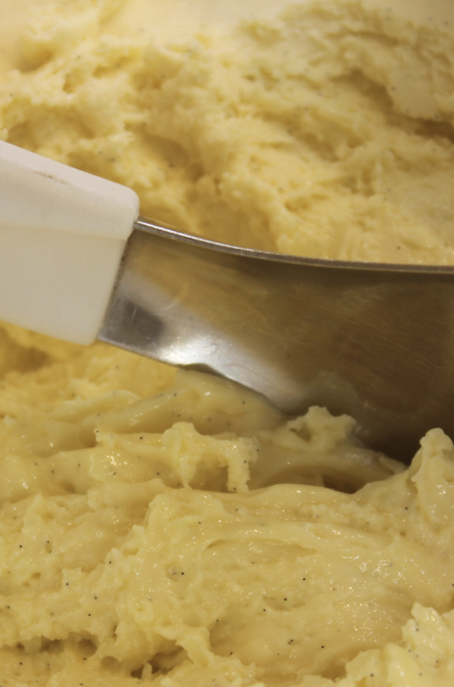
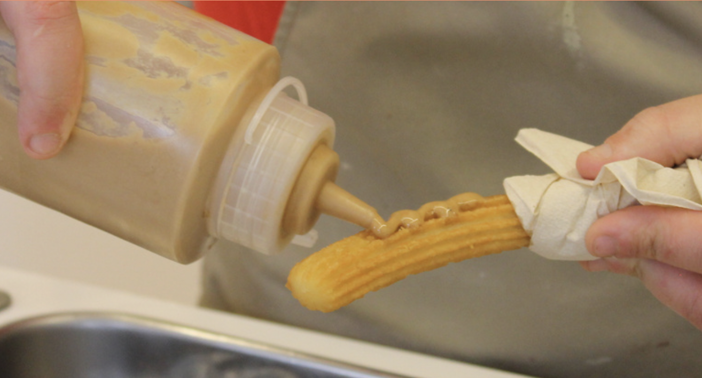
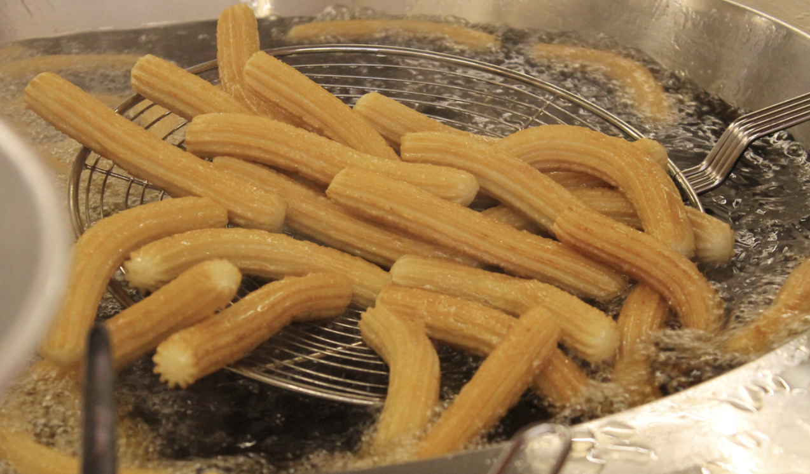

O que empezou como unha iniciativa dunha familia galega é hoxe en día unha das cadeas de xeado artesanal que máis está destacando no noso país. Bico de Xeado abriu as súas portas cunha tenda en A Coruña no 2011 e hoxe en día conta xa con 24 puntos de venta por toda España, máis de trinta colaboradores e unha vintena de franquicias.

O seu éxito e expansión está en constante crecemento, chegando a presentarse con dous postos na feira do Salón Gourmet de Madrid do ano pasado.
O que tampouco deixa de crecer é a súa variedade de sabores, pasando dos máis clásicos como o de nata ou amorodo, chegando ata ao xeado de castaña, café de pota ou requeixón da Capela con figos caramelizados.
Precisamente, a tenda na que máis multitude de clientes teñen é a de Santiago, preto do Parque da Alameda e da Catedral.
Detrás destes xeados artesanais atópase a Cooperativa Agraria Provincial da Coruña, a cal destina o leite dunha das súas granxas para a súa elaboración.
Algo cunha tradición tan grande no noso país como poden ser os churros, adquire un toque renovado e incluso vangardista grazas a locais coma Chuore.
Este novedoso establecemento é creativo tanto na súa nomenclatura, mesturando as palabras churros e amore, formando así un divertido xogo de palabras cunha fonética semellante ao italiano cuore.

Situado na rúa da Senra, a escasos metros da Alameda, Chuore é unha das ofertas máis vistosas para degustar unha lambiscada a media tarde.
A experiencia neste local comeza coa selección da cantidade de churros que imos consumir. As posibilidades oscilan entre a media ducia e a ducia completa.
Os churros preséntanse nun cono co logo de Chuore e detalles visuais que converten o produto nunha experiencia máis atractiva.

Pero, se por algo se caracteriza Chuore é por ofrecer algo máis aló dos churros de toda a vida. A tenda permite engadir múltiples sabores e toppings, convertendo os churros nunha experiencia personalizada.
Dentro da extensa carta destacan sabores como a crema de pistacho, a crema de cacahuete ou o chocolate negro, que dende a redacción recomendamos especialmente.
Unha das particularidades deste establecemento son os sabores da semana, que cambian constantemente con propostas como Lotus, Pantera Rosa ou Filipinos Brancos.
Ademais dos churros, Chuore ofrece tamén pasteliños de canela artesanais, elaborados á vista dos clientes na súa cociña vidrada.
Máis aló do gastronómico, tamén cómpre remarcar a calidade humana das persoas ao cargo do negocio, sempre próximas e dispostas a mellorar a experiencia dos clientes.
En conclusión, o éxito e renome de Chuore son completamente merecidos. Todos os produtos destacan pola súa elaboración artesanal, a súa creatividade e o coidado posto en cada detalle.